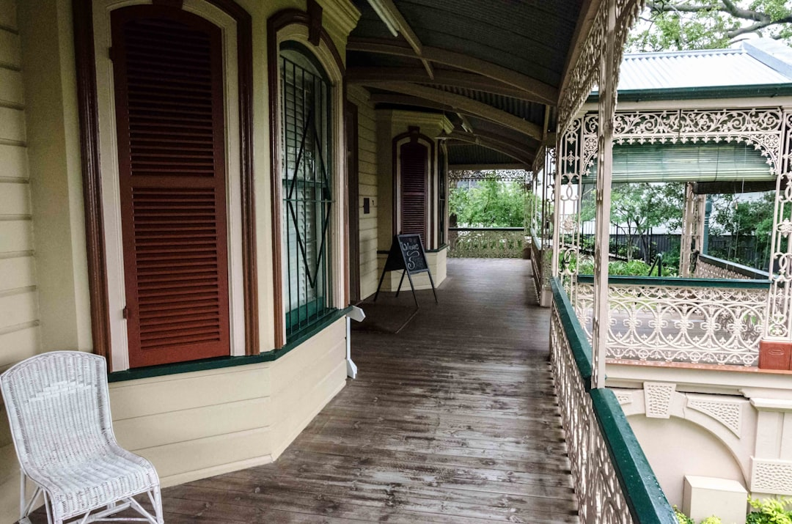

A useful Brisbane broker comparison starts with the facts on the source page: Brisbane Home Loan Broker says borrowers can access 100+ lenders, the service is free, and an enquiry is followed up within the next 4 business hours. From there, the practical work is to define whether you are buying, refinancing, investing or building, then test which lenders, documents and loan features fit that situation rather than chasing a headline rate alone.
For borrowers weighing home loan brokers brisbane choices, the sharper question is which broker conversation suits your purpose, documents and timing, not which rate sounds best in isolation.
Home Loan Brokers Brisbane Explained
Brisbane Home Loan Broker lists home loans, refinancing, commercial finance, car loans, first home buyer support, investment loans and construction loans. That range is only useful when your first enquiry is precise. Say whether you are buying to live in, reviewing an existing loan, using equity for another purchase or preparing for a build, because each path changes the documents, features and lender shortlist that matter.
The Brisbane examples on the source page are more useful than a generic suburb roll call. One example is a first buyer unsure about Queensland government grants and schemes. Another is a southside homeowner who has not reviewed an older variable loan for several years. There is also an inner Brisbane investor looking to use existing equity, and a Bracken Ridge family planning a knockdown rebuild. If you want a second editorial angle on this topic, see this Brisbane home loan broker guide.
- State the property purpose first.
- State whether funds come from savings, existing equity, or both.
- State whether timing is tied to a contract, a refinance review or a build schedule.
What a large lender panel is actually useful for
The source page says borrowers can access 100+ lenders and names CBA, Westpac, NAB, ANZ and Suncorp, along with specialist and non bank lenders. That is useful when a simple major bank comparison does not answer the brief, but it is still only a starting point. A better discussion asks which lenders are realistic for your file now, what features matter after settlement, and what evidence is likely to be checked before a formal application.
ASIC Moneysmart's home loan guidance is a good discipline here because it tells borrowers to compare rates, fees and features together. That changes the questions you ask. An owner occupier may care about redraw or offset. A refinancer may want to know whether the switch improves flexibility as well as price. A borrower with a tighter timeline may need to ask what documents are critical to prepare early so the file does not stall once lodged.
- Ask which lenders fit your circumstances today, not simply which brands are available.
- Ask what changes between options besides the interest rate.
- Ask which missing documents or credit issues could slow the file.
How the right questions change by borrower type
First home buyers, refinancers, investors and construction borrowers should not start with the same script. The source page says first home buyer support includes specialist guidance, low deposit options and Queensland grants. For that borrower, the better opening question is what support or eligibility checks should be reviewed before picking a lender. A homeowner on an older variable loan has a different job. The important comparison is not only the current rate, but whether moving would change fees, flexibility and the way the loan suits current household needs.
Investor files usually need more structure from the start. The source page's investor example refers to accessing existing equity and arranging interest only periods, so the conversation should cover the existing property, cash flow and how the next purchase sits alongside current debt. ASIC Moneysmart's property investment guidance adds a useful filter by reminding borrowers to account for vacancies, repairs and interest rate rises. For construction borrowers, the source page lists progress payment lending from specialist brokers, and it separately gives the Bracken Ridge knockdown rebuild example. That means staged funding, build documents and timing questions should be raised before any lender comparison is treated as final.
Checks worth settling before an application starts
The source page says every independent broker holds the appropriate Australian Credit Licence and professional qualifications, and it highlights MFAA and FBAA membership, professional standards and ongoing education. Those are sensible baseline checks, but they are not the end of the comparison. The more useful test is whether the discussion turns your scenario into a lender ready brief that is clear about purpose, evidence and trade offs.
For Brisbane borrowers, that means arriving with practical questions rather than broad hopes. Ask what documents are needed first, which features are essential, what may be optional, and where the file is most likely to slow down. If your situation resembles one of the source page examples, use that as the starting frame. If it does not, describe the gap clearly. The source page also says the service is free and that one of its finance specialists will contact an enquirer within the next 4 business hours, so the main opportunity is to use that early conversation to narrow choices before an application is in motion.
- Define the purpose. State whether the loan is for a home purchase, refinance, investment property, construction project or another purpose before discussing products.
- Set out the evidence. Share your deposit or equity position, property purpose and any timing pressure so the comparison starts from lender fit.
- Test the shortlist. Ask which lenders are realistic, which features matter and what documents will likely be needed before an application goes in.
- Choose the trade offs. Settle the balance between cost, flexibility and timing before moving to formal application steps.
| Scenario | Main comparison point | Best first question |
|---|---|---|
| First home buyer | Support checks and deposit position | What grants, schemes or low deposit options should be checked before I choose a lender? |
| Refinancing | Difference from the current loan | What improves here besides the interest rate? |
| Investment purchase | Equity use and cash flow | How will existing equity and current debt affect this next purchase? |
| Construction loan | Staged funding and timing | Which build documents and progress payment steps need to be ready early? |
Common questions
Is a larger lender panel enough on its own? No. Access to more lenders only helps when the shortlist is narrowed to options that fit your purpose, evidence and property plans.
What should a Brisbane refinance borrower ask first? Ask what changes from the current loan besides rate. A refinance comparison is stronger when it also covers fees, flexibility and whether the loan still suits current needs.
Why do investor files need a more detailed brief? The source page's investor example refers to using existing equity and interest only periods. That means the discussion should cover current debt and cash flow, not just the next purchase price.
Why does a construction loan need more preparation? Because the source page lists progress payment lending for construction loans, and it also gives a Bracken Ridge knockdown rebuild example. Build documents, staged funding and timing checks should be sorted early.
This guide covers how Brisbane borrowers can compare broker conversations by scenario, lender fit, documents and timing before applying.